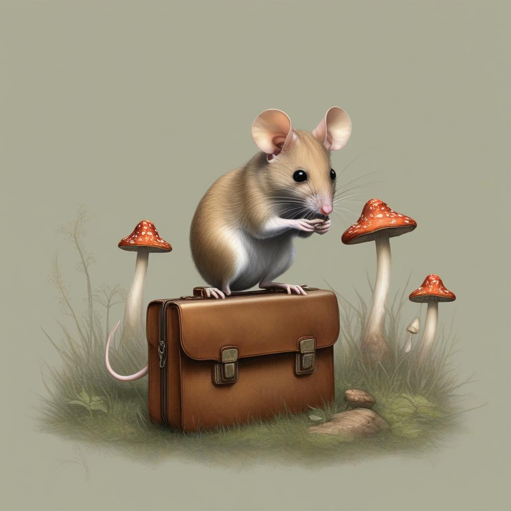

Charles walked for another hour, and at last he could wait no longer. He placed his valise on the ground, opened it, and rummaged through the coats and hats to locate a few bits from the pantry which had been on his mind for some time now. He climbed up on the valise so he could survey his surroundings while he ate. It was quite warm, though the sun had never broken through the clouds, and Charles determined a short nap might be in order after he cleaned up the last of the crumbs.